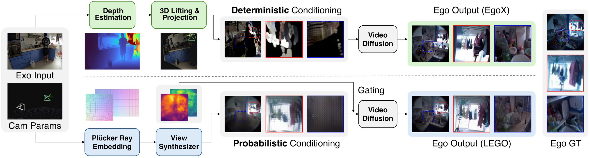
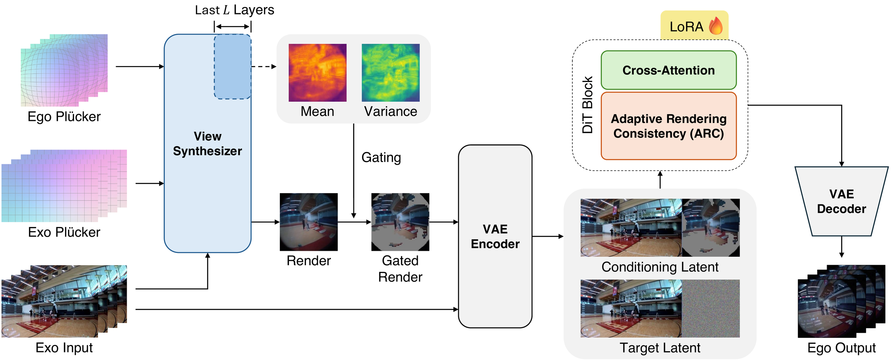
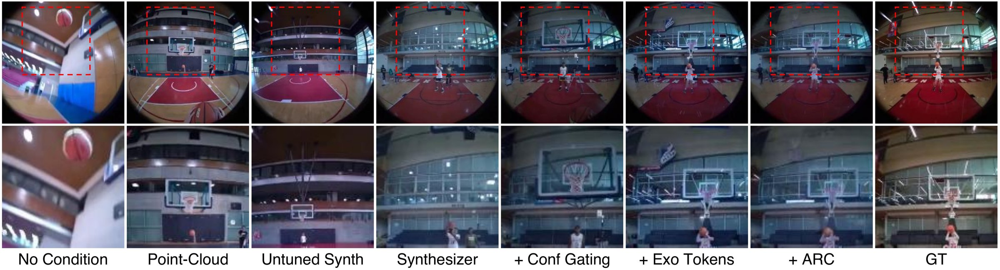
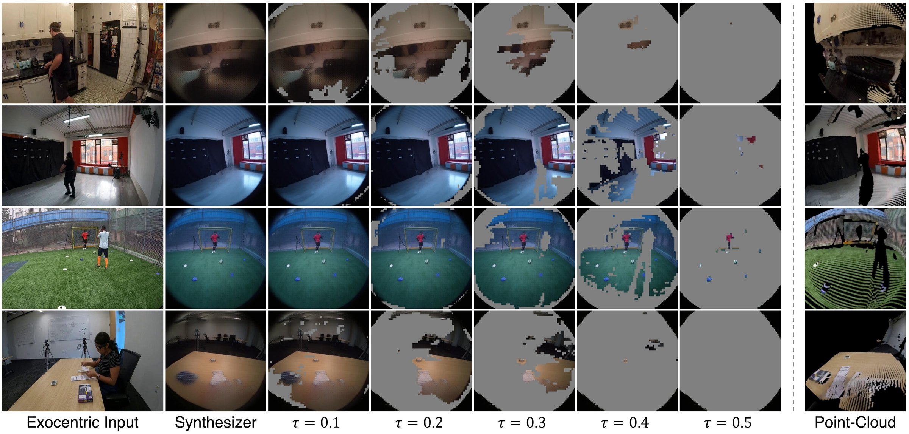
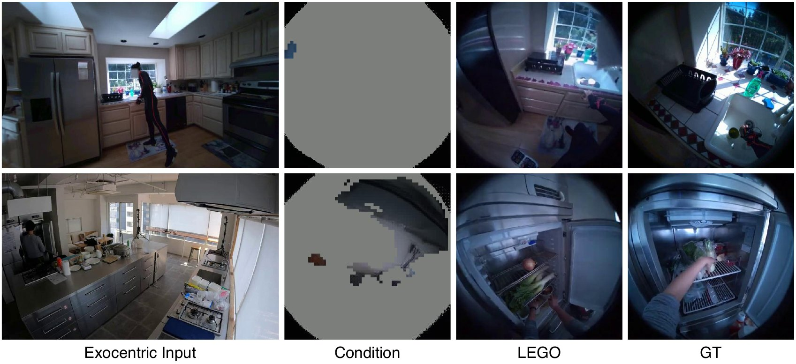

GenGenAI
*Equal contribution
TL;DRGiven a single third-person video, LEGO generates what a person in it sees, without estimating depth or building a point cloud.
Egocentric videos generated by LEGO from stop-motion LEGO footage, far from the training data. The right side is the view from the head of one minifigure along a user-specified camera trajectory.
Generating an egocentric video from a single exocentric recording is a challenging case of novel view synthesis, as the two cameras share little overlap and much of the target view is unobserved. Current state-of-the-art methods reconstruct the scene explicitly by estimating depth, lifting the video into a point cloud, and re-rendering it from the egocentric camera to condition a video diffusion model. This deterministic mapping assigns each pixel to a single reprojected location, which preserves texture but translates depth errors into misplaced content. We ask what a video diffusion model should receive as its condition and propose a lifting-free answer: a learned view synthesizer, an LVSM-style transformer fine-tuned to render the egocentric view directly without depth, point clouds, or reprojection, resolving cross-view correspondence internally. In contrast, its probabilistic mapping averages each region over candidate source locations according to a learned correspondence distribution, preserving structure while fine texture is averaged away. We argue that this trade-off suits a diffusion generator, whose denoising training excels at restoring detail, so an effective condition should prioritize structural alignment over sharpness. This distribution's concentration also yields a per-region confidence, used both to mask low-confidence regions and to guide the generator toward high-confidence areas during early layout-forming denoising steps. Our approach consistently outperforms the state-of-the-art explicit pipeline and generalizes to other datasets without retraining. The synthesizer thus supplies view structure, and the diffusion model its detail.
Motivation
Reconstruction pipelines estimate depth, lift the exocentric video into a point cloud, and re-render it from the egocentric camera. Each pixel lands at one reprojected location, so the render stays sharp, but a depth error moves content to the wrong place, and much of the egocentric frame is left uncovered.
LEGO renders the egocentric view with a learned view synthesizer instead. It averages over the candidate source locations, so its errors are blur rather than misplaced content. Blur is the corruption that denoising training teaches a diffusion model to undo, while misplaced content has to be overridden. The render below is soft, but it puts the scene where it belongs.

Method
LEGO keeps the video diffusion backbone and the canvas of EgoX, where the exocentric and egocentric views are placed side by side and the egocentric half of the conditioning latent carries the condition. It changes two things: what fills that condition, and how the early denoising steps are guided.

An LVSM-style transformer maps the exocentric frame and the ray maps of both cameras to the egocentric fisheye frame. It is fine-tuned for 10k steps, about 3.5 hours on four H200 GPUs, and then frozen.
The synthesizer's attention forms a distribution over exocentric source locations. Its top-16 mass is a per-region confidence, and regions below the threshold are set to neutral gray, so the generator completes them from its own prior.
During the early steps, when the layout is decided, ARC moves the generator's clean estimate toward the render in proportion to the squared confidence. It needs no training and replaces a depth-derived attention bias that prior work trains into the generator.
Results
Both methods receive the same camera poses, text prompt, and random seed. EgoX is the authors' released checkpoint. EgoHumans and Nymeria are never used for training: LEGO runs with the weights trained on Ego-Exo4D.
Unseen scene, cooking
Unseen scene, basketball
Basketball, outdoors
Building with blocks, indoors
Apartment, living room and kitchen
Apartment, galley kitchen
Quantitative results
| Image criteria | Video criteria | |||||||
|---|---|---|---|---|---|---|---|---|
| Method | PSNR ↑ | SSIM ↑ | LPIPS ↓ | CLIP-I ↑ | FVD ↓ | TF ↑ | MS ↑ | DD ↑ |
| Seen scenes | ||||||||
| Exo2Ego-V | 14.53 | 0.384 | 0.569 | 0.774 | 622.47 | 0.960 | 0.966 | 0.985 |
| TrajectoryCrafter | 13.05 | 0.375 | 0.606 | 0.780 | 546.09 | 0.960 | 0.980 | 0.947 |
| Wan Fun Control | 12.25 | 0.463 | 0.617 | 0.810 | 595.07 | 0.968 | 0.980 | 0.901 |
| Wan VACE | 12.95 | 0.413 | 0.626 | 0.829 | 508.69 | 0.989 | 0.994 | 0.673 |
| EgoX | 16.05 | 0.556 | 0.498 | 0.896 | 184.47 | 0.977 | 0.990 | 0.974 |
| EgoX† | 15.57 | 0.556 | 0.466 | 0.903 | 197.95 | 0.985 | 0.993 | 0.990 |
| LEGO | 20.28 | 0.689 | 0.310 | 0.925 | 155.56 | 0.989 | 0.994 | 0.987 |
| Unseen scenes | ||||||||
| Exo2Ego-V | 12.70 | 0.439 | 0.597 | 0.679 | 1283.50 | 0.971 | 0.976 | 0.978 |
| TrajectoryCrafter | 12.24 | 0.297 | 0.619 | 0.778 | 821.71 | 0.966 | 0.984 | 0.944 |
| Wan Fun Control | 13.59 | 0.439 | 0.604 | 0.799 | 968.78 | 0.971 | 0.985 | 0.944 |
| Wan VACE | 12.17 | 0.345 | 0.638 | 0.820 | 1045.45 | 0.995 | 0.996 | 0.427 |
| EgoX | 14.38 | 0.457 | 0.552 | 0.877 | 440.64 | 0.981 | 0.992 | 0.989 |
| EgoX† | 13.53 | 0.437 | 0.542 | 0.886 | 455.06 | 0.986 | 0.994 | 0.990 |
| LEGO | 15.91 | 0.505 | 0.504 | 0.897 | 404.77 | 0.990 | 0.995 | 1.000 |
Rows without a mark are quoted from the EgoX paper. †The released EgoX checkpoint rerun under our evaluation code. TF, MS, and DD are the VBench temporal flickering, motion smoothness, and dynamic degree scores.
| Image criteria | Video criteria | |||||||
|---|---|---|---|---|---|---|---|---|
| Method | PSNR ↑ | SSIM ↑ | LPIPS ↓ | CLIP-I ↑ | FVD ↓ | TF ↑ | MS ↑ | DD ↑ |
| EgoHumans | ||||||||
| EgoX† | 13.74 | 0.460 | 0.573 | 0.806 | 421.83 | 0.983 | 0.991 | 1.000 |
| LEGO | 15.52 | 0.530 | 0.545 | 0.819 | 332.41 | 0.985 | 0.992 | 1.000 |
| Nymeria | ||||||||
| EgoX† | 11.64 | 0.451 | 0.637 | 0.804 | 296.98 | 0.984 | 0.993 | 1.000 |
| LEGO | 15.23 | 0.534 | 0.561 | 0.821 | 210.27 | 0.988 | 0.994 | 1.000 |
Both methods use weights trained on Ego-Exo4D only, with no fine-tuning. Each dataset has 200 test clips.
Ablation
All arms share one training recipe and differ only in the conditioning input and in how denoising is guided.
| Seen scenes | Unseen scenes | |||||||
|---|---|---|---|---|---|---|---|---|
| Arm | PSNR ↑ | LPIPS ↓ | CLIP-I ↑ | FVD ↓ | PSNR ↑ | LPIPS ↓ | CLIP-I ↑ | FVD ↓ |
| Conditioning input (exocentric tokens hidden) | ||||||||
| No condition | 12.30 | 0.591 | 0.862 | 310.00 | 11.38 | 0.640 | 0.838 | 695.44 |
| Point-cloud render | 15.59 | 0.478 | 0.895 | 195.80 | 13.42 | 0.595 | 0.853 | 549.77 |
| Untuned synthesizer render | 15.71 | 0.503 | 0.888 | 212.94 | 13.56 | 0.596 | 0.848 | 560.51 |
| Synthesizer render | 18.24 | 0.364 | 0.904 | 183.40 | 14.35 | 0.567 | 0.860 | 581.90 |
| Completing the configuration (cumulative) | ||||||||
| + confidence gating | 18.27 | 0.375 | 0.904 | 166.86 | 14.40 | 0.566 | 0.868 | 502.47 |
| + exocentric tokens | 18.91 | 0.340 | 0.921 | 159.04 | 14.98 | 0.515 | 0.897 | 415.08 |
| Denoising guidance | ||||||||
| GGA (trained into the model) | 18.62 | 0.356 | 0.915 | 194.98 | 15.20 | 0.525 | 0.896 | 429.42 |
| ARC (point-cloud render) | 13.96 | 0.586 | 0.801 | 735.50 | 13.72 | 0.618 | 0.795 | 812.88 |
| ARC (synthesizer render) = LEGO | 20.28 | 0.310 | 0.925 | 155.56 | 15.91 | 0.504 | 0.897 | 404.77 |

Without a gate, the synthesizer render fills every location, including those with no exocentric evidence. The gate sets locations whose confidence falls below the threshold to neutral gray.

LEGO inherits the limitations of its view synthesizer. The synthesizer renders each frame from a single exocentric frame, so it cannot recover content that the frame does not show, and it blurs where the correspondence is uncertain. On unfamiliar scenes its colors also fade. The pipeline needs no depth, but it still needs the camera poses of both views. Because the synthesizer is frozen and enters only through its render and confidence, a stronger feed-forward view synthesizer can replace it without changing the diffusion model or ARC.

@misc{cho2026lego,
title = {LEGO: A Lifting-Free Approach for Exocentric-to-Egocentric Video Generation},
author = {Cho, Suhwan and Choi, Yonwoo and Kim, Soongjin and Park, Jicheol and Lim, Taegyu},
year = {2026}
}